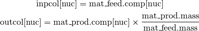

FCComp Class¶
This is the central class to all bright fuel cycle components. The premise of FCComp is that all components take a material input, perform some operation on the input, and most then return a material as output. This class defines the elements common to all fuel cycle components.
All functionality may be found in the fccomp module:
import bright.fccomp
- class bright.fccomp.FCComp¶
Abstract Base Fuel Cycle Component Class.
Parameters : params : sequence of str, optional
A set of parameter names (str) that the component will track.
name : str, optional
The name of the fuel cycle component instance.
- name¶
The string identifier for the component. Defaults to an empty string.
- natural_name¶
The natural name string identifier for the component. Computed from name value.
- mat_feed¶
A pyne.material.Material object that represents the flow of material into this component for this pass.
- mat_prod¶
A pyne.material.Material object that represents the flow of material out of this component for this pass. Calling the FCComp.calc() method should calculate mat_prod from the mat_feed value.
- params_prior_calc¶
A dictionary (or C++ map) that represents component-specific parameters at input for this pass. The keys are restricted to strings while their associated values are floats (doubles). For example, a reprocessing component may record the total mass input using a “Mass” key. This attribute does not have a meaningful value until the calc_params() method is called.
- params_after_calc¶
A dictionary (or C++ map) that represents component-specific parameters at output for this pass. The keys are restricted to strings while their associated values are floats (doubles). For example, a reactor component may have a “BUd” key that represents the discharge burnup that the input fuel achieved. This attribute does not have a meaningful value until the calc_params() method is called.
- pass_num¶
An integer representing the number of passes this component has been cycled through. It starts at zero and is incremented by one each time the write_mat_pass() method is called.
- track_params¶
A set of strings that holds the keys of params_prior_calc and params_after_calc. Every component type has its own set of parameters it is able to track. This is why track_params is a component-specific attribute, while track_nucs is a bright-level variable.
- calc(input=None)¶
This method is used to determine a component’s output material from its input material. Therefore, this is typically where the bulk of a fuel cycle component’s algorithm lies. As each component type has a distinct methodology, the calc() method needs to be overridden child classes.
This method should return mat_prod so that component calculations may be easily daisy-chained together.
Parameters : input : dict or Material, optional
If input is present, it set as mat_feed. If input is a nuclide dictionary (zzaaam keys, float values), this dictionary is first converted to a Material before being set as mat_feed.
Returns : output : Material
mat_prod
- calc_params()¶
By calling this method, all parameter values are calculated and set for the fuel cycle component. This should be done following a calc() calculation but before data is written out. If a component has important parameters associated with it, this function must be overridden and called.
Note that this is called first thing when write_params_pass() is called. For example, reprocessing only has a “Mass” parameter. Translated into Python, calc_params() here looks like the following:
def calc_params(self): self.params_prior_calc["Mass"] = self.mat_feed.mass self.params_after_calc["Mass"] = self.mat_prod.mass return
- write()¶
This is a convenience function that first increments up pass_num. Then, it checks to see if there are any parameters for this component. If there are, it sets the current values using calc_params().
If bright.bright_conf.write_hdf5 is True, then write_hdf5() is called.
If bright.bright_conf.write_text is True, then write_text() is called.
This is what is most often used to write Bright output. Therefore it is typically the last step for every component in each pass.
- write_text()¶
This method calls write_mat_pass() and then, if available, calls write_params_pass(). This is convience function for producing text-based output. However, using write() is recommended.
- write_hdf5()¶
This method writes out the isotopic pass data to an HDF5 file. Then, if available, it also writes parameter data as well. Using write() instead is recommended.
- write_mat_pass()¶
This method is responsible for adding the current material data for this pass to the output text and hdf5 files for this component. Further calculations for this pass should not be performed after write_mat_pass() has been called.
This function has one very important subtletywhen writing text output. It does not write out material data directly. Rather, input columns are given as normalized isotopic vectors. As weight fractions, input columns are in units of [kg_mat_feed[nuc]/kg_mat_feed.mass]. Moreover, the output columns are given in terms relative to the mass of the input mass, [kg_mat_prod[nuc]/kg_mat_feed.mass]. These are calculated via the following expressions.

Because of the units of these two columns, total mass flow data may often only be recovered via the a “Mass” parameter in the parameter file. Here is a sample LWRIsos.txt file for a light water reactor for the first pass:
Isotope 1in 1out H1 0.000000E+00 0.000000E+00 H3 0.000000E+00 8.568522E-08 HE4 0.000000E+00 4.421615E-07 B10 0.000000E+00 0.000000E+00 B11 0.000000E+00 0.000000E+00 C14 0.000000E+00 4.015091E-11 O16 0.000000E+00 0.000000E+00 SR90 0.000000E+00 8.221283E-04 TC99 0.000000E+00 1.112580E-03 CS137 0.000000E+00 1.821226E-03 U234 0.000000E+00 2.807466E-06 U235 4.773292E-02 8.951725E-03 U236 0.000000E+00 6.155297E-03 U237 0.000000E+00 1.719458E-05 U238 9.522671E-01 9.211956E-01 U239 0.000000E+00 6.953862E-07 NP237 0.000000E+00 8.057270E-04 PU238 0.000000E+00 2.842232E-04 PU239 0.000000E+00 5.353362E-03 PU240 0.000000E+00 2.114728E-03
Note that HDF5 ouput perisists materials themseleves and do not present this normalization problem.
- write_params_pass()¶
What write_mat_pass() does for a component’s input and output isotopics, this method does for the components parameters. To ensure that meaningful data is available, calc_params() should be called elsewhere in the program prior to this method. Note that to get the pass numbering correct, pass_num should always be incremented prior to this method. The following is an example of a text file output for a light water reactor spent fuel reprocessing facility:
Param 1in 1out Mass 9.985828E-01 9.975915E-01